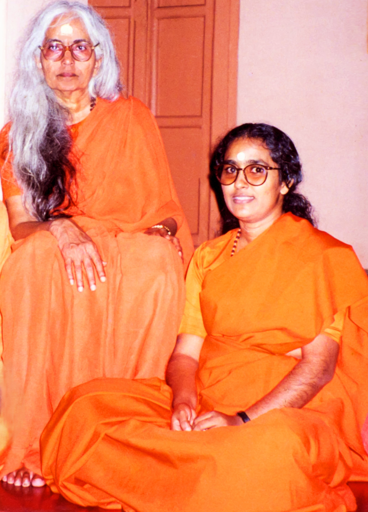

Sri Gurudev Swami Chinmayanandaji — Bhoomi Pooja, 8th Feb 1982
The Story of Chinmayaranyam
Drawn by Eswara Sankalpa, Pujya Swamini Saradapriyananda Mataji received a piece of barren land of 24 acres extent in a burial ground donated by the villagers for establishing an Ashram in a remote village, Ellayapalle, of the drought prone the then Kadapa District, in Andhra Pradesh. Sri Gurudev Swami Chinmayanandaji's first visit to this place on 8th Feb. 1982 was to conduct Bhoomi Pooja.
Recalling this event Mataji said, “Gurudev was walking along the two streets of Ellayapalle Village. The people were just staring at, without even coming out of their huts and not knowing what to do. But in Harizan lane, an elderly man came out of his hut lifting up his hands in salutations. Immediately Gurudev embraced in all love and said loudly saying ‘Hari Om! Hari Om!’ That was the real Bhoomi Pooja for Chinmayaranyam Complex. In His long vision Gurudev set in motion the forces that were to operate there and the type of services that were to come up.”
Gurudev's Vision
• • •“This Ashram would be a new type of Ashram where the poor and the needy would be served with love and affection. It would set an example to the whole country to show how village uplift had to be done.”
There was no water in this land. The village had two wells of which one was dry and the second would go dry any moment. Against this background Swamiji was visualizing a forest around the Ashram, which to many appeared to be a pipe dream. Pointing out with His walking stick to two banyan trees, standing on either side of the land, Swamiji said, “Dig along the line that connects the two trees. Water is sure to come. I invoke Lord Eswara's blessings to release His Ganga from the top of the hillock or from the bowels of the earth.”
And yes, water did spring forth from the bore-well when it was dug. Everybody was surprised to see water in the place where He pointed out to dig.
Guru Parampara
• • •
The Legacy Continues
• • •Chosen by Pujya Swamini Amma, Swamini Seelananda, one of the foremost among the disciples of Her, is presently serving the Chinmayaranyam group of Ashrams.
We invite each and every one to join us extending a helping hand to continue to keep the Chinmaya Vision alive and glowing in Chinmayaranyam, Ellayapalle.
Contribute Now
Pujya Mataji & Pujya Ammagaru
Key Milestones
• • •40+
Years of Service
1000+
Students Educated
Daily
Annadanam Service
10000+
Lives Touched